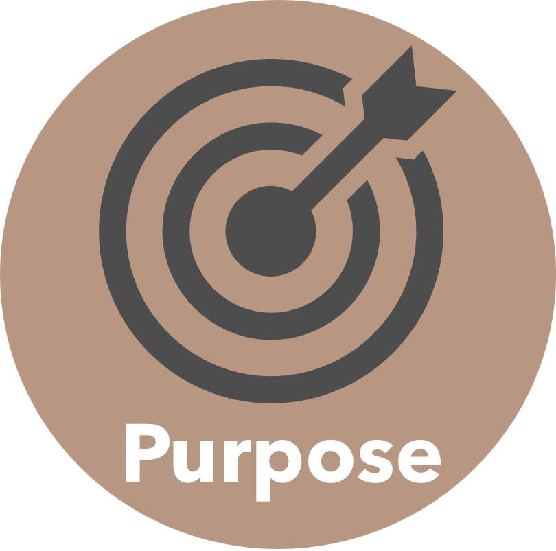
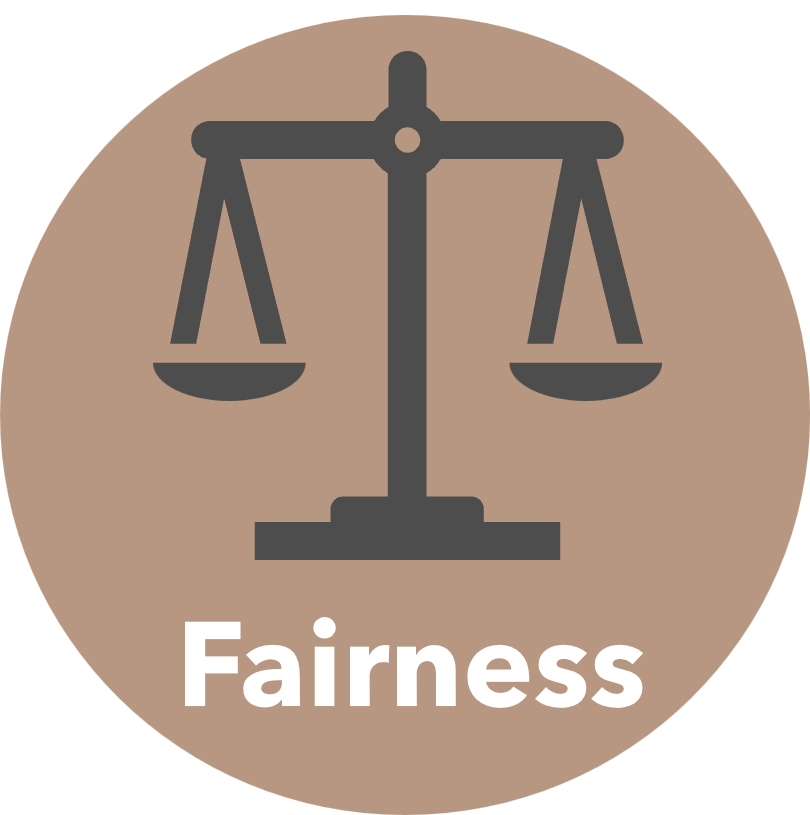
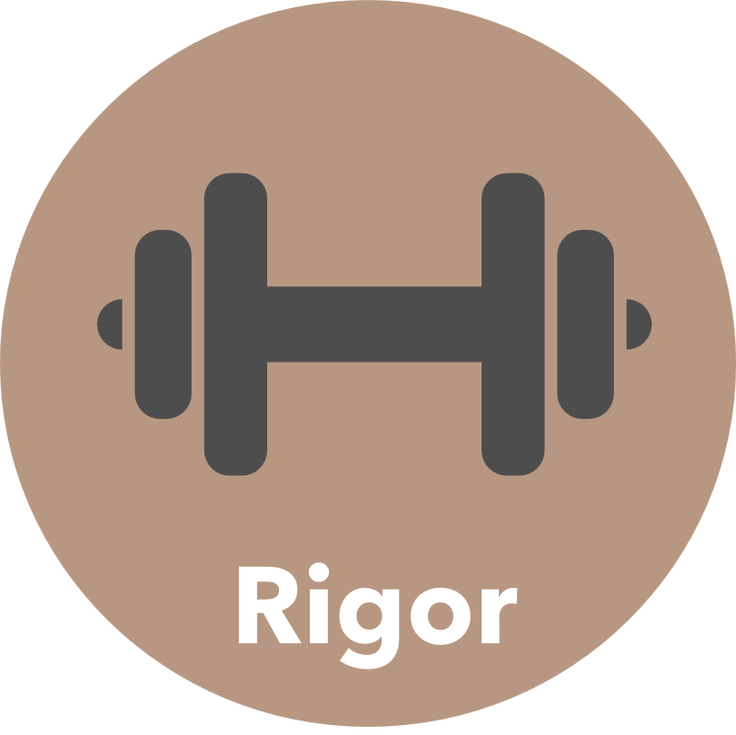

Industries ranging from radioisotope manufacturing to semiconductor fabrication to biodiesel production generate hazardous, recalcitrant, and complex wastes. Electrocatalysis, which can be energy-efficient and of low carbon intensity, offers an opportunity to transform such wastes into valuable, industrially-relevant chemicals. Such chemicals could then, in principle, be sold for profit. Although many electrochemical waste-upgrading reactions have been developed, industrial adoption of electrocatalytic waste valorization processes remains limited.
Existing electrocatalytic waste valorization processes rely heavily on studies of pure, single-reactant feeds that arrive in academic laboratories as homogenous chemicals in amber glass. Yet industrial wastes are neither purified nor single-component: they are complex, multi-reactant, and shipped to unsuspecting graduate students in reused vegetable oil jugs.
Therefore, to develop economically-viable electrochemical waste upgrading processes, we must understand the effects of feed complexity on electrocatalytic reactions across the scales of reaction engineering.
Integrity in the Gaines group is demonstrated through transparency in the sharing of the materials used, the methods employed, and the data represented in a research product.
Purpose in the Gaines group is demonstrated through alignment between a group member's broader interests and their day-to-day work.

Fairness in the Gaines group is demonstrated through bidirectional feedback, predetermined decision-making criteria, and defined expectations.

Rigor in the Gaines group is demonstrated through experimental replication and validation, clearly-defined use of statistical criteria, and detailed and accurate record-keeping.
